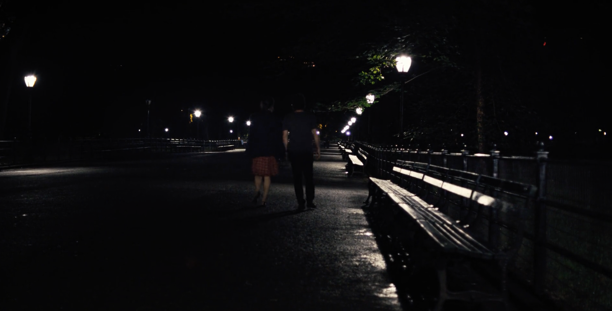
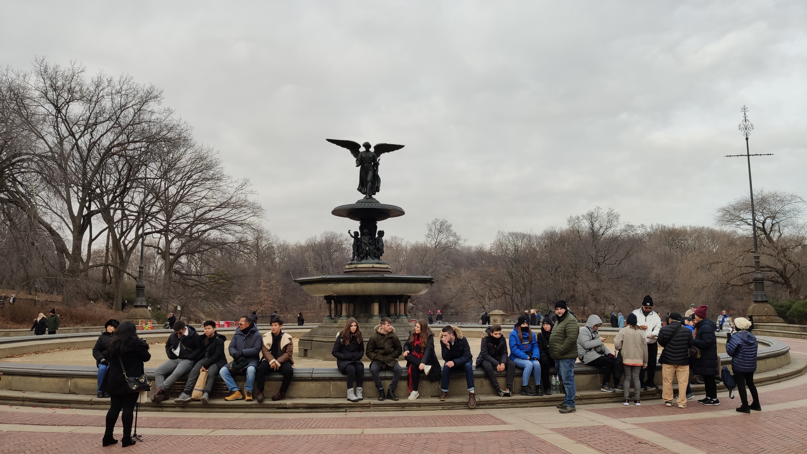

游泳回来的路上，我的歌单无意中随机到一首歌叫No one else like you. 很奇妙的是，我情不自禁的跟着这首歌的旋律在14th St 上边跳边走。我就有种跟着伴舞的冲动。而且我对这首歌没有什么印象，可是我的歌单都是我like过添加进去的。掏出手表我看了眼专辑封面，我发现是一个我很熟悉的图片，我对这部电影有印象，可是当时我把这部电影跟汤姆汉克斯演的一部爱情片《电子情书》记串了。于是我回去后就开始看这部片子了。
Begin Again
这部电影的名字其实是叫Begin Again，中文名有点拗口，有两个翻译，一个是根据剧情翻译叫《音乐改变人生》，另一个是根据字面意思翻译，叫《再次出发之纽约遇见你》。感觉还是英文名记起来简单一点。故事的剧情其实也很简单，就是一个音乐人重新开始发掘艺人制作专辑，然后穿插着音乐人和艺人对于感情的覆灭和重新开始。不过两者不完全相同，音乐人Dan是最后和出轨的前妻重新开始了恋情，但是艺人没有原谅出轨的男友。
布景
这个片子的布景挺有意思的，在纽约曼哈顿的街头拍摄的。我呢刚好在纽约玩完所以对其中一些场景都有印象，比如时代广场，片中是在晚上拍摄的，手持的Red 摄影机。还有中央公园好几处场景，第一个是林荫大道 The Mall

而我拍摄的林荫大道则感觉差那点意思

下一个场景是中央公园很著名的喷泉，现实中去看感觉真的就那么回事，建筑很破，周围垃圾也不少，游客也多都坐在上面，而且我冬天去的喷泉也没有水。


看完我的就感觉差了不少意思


还有就是纽约的地铁，片中其实戏份也不少，女主的那首歌也是讲地铁的。他们录音乐也有在地铁里录的片段。

而实际上，纽约的地铁是真的脏乱差，到处都是垃圾，最不可思议的是地面上的排水网格直接通到了地铁线路上，所以各种垃圾掉落是不可避免而且很难处理的，很多处的铁路的轨道上都是白色的快餐饭盒。电影中那一站我们也刚好去了，感觉拍电影时应该是刻意打扫过了哈哈，干净了不少。
说道场景对比不得不说的是Rocky这个片子，在费城Rocky Road 和 Rocky Statue 俨然成为了新地标和新景点。我们是圣诞节那天去的，台阶上都是模仿Rocky动作拍照的游客，雕塑旁都是排队等着合影的人群。很难想象这里的“原主人”费城艺术博物馆其实今天是关门的。


音乐
作为音乐电影，本片的音乐是真的很不错，多首脍炙人口的歌曲，比如《Lost Stars》，很多都很对我胃口。更有甚者，本片的男二号也是由本片大部分歌曲的演唱者魔力红主唱来出演的，摇滚明星演摇滚明星也算是本色出演。而本片的男主音乐制作人Dan的原型是导演的哥哥Jim, 他于片子上映前逝世，所以本片是导演献给其哥哥的片子。导演本身也是乐队出身所以拍起音乐题材得心应手，另外一部《Once》的歌曲我听过，片子待下次看。